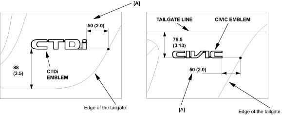

Exterior Trim
Emblem Replacement
20-2
NOTE:
When removing the emblem, take care not to scratch the body.
5-door: For the front and rear ''H''emblems, refer to the '01 Civic Shop Manual, P/N 62S5A00 on this CD (see page
20-257
).
3-door: For the front and rear ''H''emblems, refer to the '01 Civic Shop Manual Supplement, P/N 62S5A22 on this CD (see page
20-43
).
Clean the body surface with a sponge dampened in alcohol. After cleaning, keep oil, grease and water from getting on the surface.
Apply the emblem, where shown.
5-door:
FRONT "H" EMBLEM
CIVIC EMBLEM
CTDi EMBLEM
REAR "H" EMBLEM
Unit: mm (in.)
[A] : Measure along the tailgate surface.

a
a
a